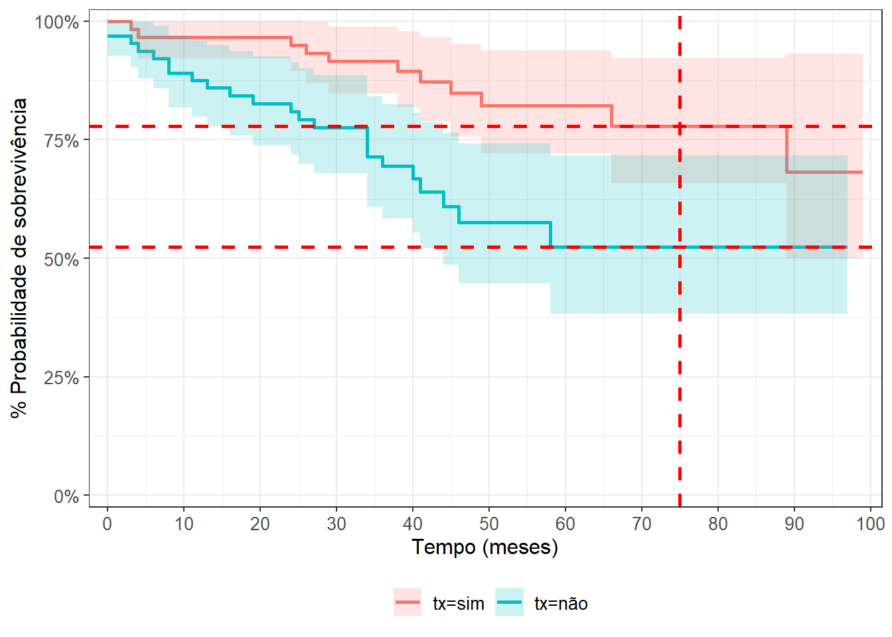
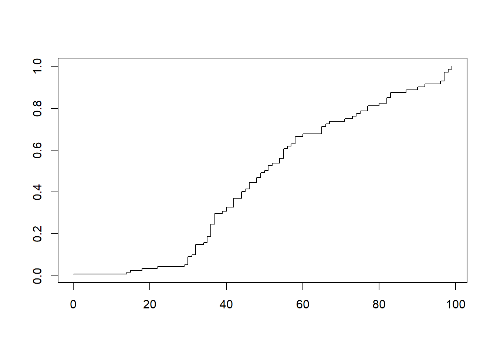
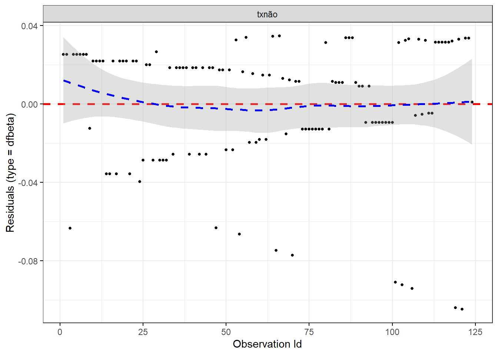

library(tidyverse)
library(flexplot)
library(foreign)
library(dplyr)
library(tm)
library(ggplot2)
library(forcats)
library(rempsyc)
library(easystats)
library(kableExtra)
library(gtsummary)
#Específicos para survival
library(survival)
library(ggsurvfit)
library(survminer)
library(broom)
library(survMisc)
library(PHInfiniteEstimates)
library(coin)
library(condSURV)6 Lista 6 - Kaplan-Meier e Cox Regression
Temos os dados de 124 pacientes que estão na fila para um transplante de rim. Temos as variáveis:
T_seg – tempo de seguimento (em meses);
tx - fez transplante (sim, não);
óbito - morte do paciente (sim, não);
t_tx - tempo até o transplante (em meses).
Com base nos dados:
6.1 Carregando pacotes
6.2 Limpando o ambiente
Quando executamos diversos comandos no R muitas vezes acabamos deixando o ambiente meio “sujo”. Cheio de variáveis que não estamos mais utilizando, ou pacotes que estão carregados e não serão utilizados no momento.
Em longas sessões utilizando o R é sempre bom dar uma limpada no ambiente entre um projeto e outro. Para isso podemos executar o código abaixo:
# Limpa o ambiente
rm(list = ls(all.names = TRUE)) # will clear all objects including hidden objects
gc() # free up memory and report the memory usage used (Mb) gc trigger (Mb) max used (Mb)
Ncells 3170881 169.4 4805995 256.7 4805995 256.7
Vcells 5390829 41.2 10154066 77.5 8395055 64.1options(max.print = .Machine$integer.max, scipen = 999, stringsAsFactors = F, dplyr.summarise.inform = F) # avoid truncated output in R console and scientific notation
# Set seed
set.seed(42)6.3 Definindo um tema para os gráficos
Preenhcer todos os parâmetros da função ggplot() é uma tarefa morosa e repetitiva. Podemos criar um tema para todos os nossos gráficos e assim manter a consistência nas figuras e não precisar ficar escrevendo toda hora aquele parâmetro para mudar a espessura da linha do eixo X…
Uma vez definido o tema, podemos apenas chamá-lo dentro da função ggplot para repetir o padrão. Vamos armazenar todas as informações da padronização em uma variável com o código a seguir:
meu_tema <- theme(plot.title = element_text(size = rel(2)),
panel.grid.major.y = element_line(colour = 'gray'),
panel.grid.minor.y = element_line(colour = 'gray'),
panel.grid.major.x = element_blank(),
panel.grid.minor.x = element_blank(),
plot.background = element_rect(fill = NULL, colour = 'white'),
panel.background = element_rect(fill = 'white'),
# Axis stuff
axis.line = element_line(colour = 'black', linewidth = 1),
axis.text = element_text(colour = "black", face = 'bold'),
axis.text.x = element_text(size = rel(1)),
axis.text.y = element_text(size = rel(1)),
axis.title = element_text(size = rel(1.2)),
axis.ticks = element_line(colour = 'black', linewidth = 1.2),
# Legend stuff
legend.position = "bottom",
legend.margin = margin(6, 6, 6, 6),
legend.title = element_text(face = 'bold'),
legend.background = element_blank(),
legend.box.background = element_rect(colour = "black"))Vamos utilizar o tema em nossos gráficos mais adiante!
6.4 Carregando os dados e modificando o tipo de variável
Como de costume, vamos carregar os dados e ver os tipos das variáveis que temos no banco de dados.
original = read.spss("teste Cox tempo dep Tx.sav", to.data.frame=TRUE)
glimpse(original)Rows: 124
Columns: 5
$ id <chr> "13758618I ", "13750502G …
$ t_seg <dbl> 99, 98, 97, 97, 97, 96, 92, 90, 89, 87, 83, 83, 82, 82, 80, 77, …
$ t_tx <dbl> 22, 81, NA, 25, 93, 5, 1, 30, 88, 28, 30, 13, 49, NA, NA, 10, NA…
$ tx <fct> sim, sim, não, sim, sim, sim, sim, sim, sim, sim, sim, sim, sim,…
$ obito <fct> não, não, não, não, não, não, não, não, sim, não, não, não, não,…
Cuidado!
A variável do evento (óbito em nosso exemplo) PRECISA ser recodificada para uma variável numérica binária, ou seja, 1 e 0 caso queira realizar a análise de sobrevida.
Na seção Section 6.16, exploraremos as distinções entre conduzir as análises com os fatores “sim” e “não” versus os números 1 e 0.
Inicialmente, ajustaremos a variável para aceitar os valores 1 e 0, representando a ocorrência do evento e a censura, respectivamente. Para isso, empregaremos o operador pipe %>% para duplicar a base de dados original e efetuar a modificação no mesmo script. O operador pipe é útil para executar várias operações em uma única sequência de código.
db <- original %>%
mutate(
obito = as.integer(obito == "sim") # para transformar sim e não em 1 e 0, respectivamente
)
glimpse(db)Rows: 124
Columns: 5
$ id <chr> "13758618I ", "13750502G …
$ t_seg <dbl> 99, 98, 97, 97, 97, 96, 92, 90, 89, 87, 83, 83, 82, 82, 80, 77, …
$ t_tx <dbl> 22, 81, NA, 25, 93, 5, 1, 30, 88, 28, 30, 13, 49, NA, NA, 10, NA…
$ tx <fct> sim, sim, não, sim, sim, sim, sim, sim, sim, sim, sim, sim, sim,…
$ obito <int> 0, 0, 0, 0, 0, 0, 0, 0, 1, 0, 0, 0, 0, 0, 0, 0, 0, 0, 0, 0, 0, 0…Pronto, agora temos que óbito assumiu os valores de números 1 e 0.
Outra análise exploratória importante a fazer nos dados é observar se há dados faltantes (NA) e onde eles estão, caso estejam presentes. Se uma variável tiver muitos NAs, vamos precisar de cautela para inserir a variável na análise.
# Verificando NAs
data.frame(
nas_t_seg = sum(is.na(db$t_seg)),
nas_t_seg = sum(is.na(db$t_tx)),
nas_tx = sum(is.na(db$tx)),
nas_obito = sum(is.na(db$obito))
) nas_t_seg nas_t_seg.1 nas_tx nas_obito
1 0 64 0 0kable(report(db))| Variable | Level | n_Obs | percentage_Obs | percentage_Missing | Mean | SD | Median | MAD | Min | Max | Skewness | Kurtosis | n_Entries | n_Missing | |
|---|---|---|---|---|---|---|---|---|---|---|---|---|---|---|---|
| 3 | id | NA | 124 | 0.00 | 124.00 | 0 | |||||||||
| 5 | t_seg | NA | 124 | 0.00 | 45.22 | 24.08 | 42.00 | 19.27 | 0.00 | 99.00 | 0.38 | -0.19 | |||
| 6 | t_tx | NA | 124 | 51.61 | 19.90 | 20.05 | 16.31 | 1.00 | 93.00 | 1.99 | 4.70 | ||||
| 1 | tx | sim | 60 | 48.39 | |||||||||||
| 2 | tx | não | 64 | 51.61 | |||||||||||
| 4 | obito | NA | 124 | 0.00 | 0.27 | 0.45 | 0.00 | 0.00 | 0.00 | 1.00 | 1.02 | -0.97 |
O número de NAs na variável t_tx é alto (51.61%) pelo simples motivo de que pessoas que não fizeram transplante não possuem a marca do tempo que fizeram o transplante. Em todo caso podemos verificar se existem indivíduos que fizeram o transplante mas não possuem a marca do tempo em que fizeram o transplante.
db %>%
filter(tx == "sim" & is.na(t_tx))[1] id t_seg t_tx tx obito
<0 linhas> (ou row.names de comprimento 0)O código acima filtra os dados de pessoas que fizeram o transplante (tx sim) e que tenham NA na coluna t_tx. Como o resultado volta com zero elementos, podemos concluir que todas as pessoas que fizeram o transplante, possuem a marca do horário em que o transplante foi feito.
Na tabela acima podemos perceber também que a porcentagem de pessoas que não fizeram o transplante (51.61) é a mesma porcentagem de dados faltantes (missing) da variável t_tx (51.61)
Por fim, podemos ver quantas pessoas morreram pela causa de morte do desfecho durante o período de observação.
kable(table(db$obito))| Var1 | Freq |
|---|---|
| 0 | 90 |
| 1 | 34 |
Lembrando que 1 é o evento, que no nosso exemplo é ocorrência do óbito
Vamos agora às análises.
6.5 Criando a estrutura de dados
Iniciamos especificando para a função Surv() as colunas referentes ao tempo observado e aos eventos de interesse, que, neste caso, são os óbitos.
surv_obj <- Surv(time = db$t_seg, event = db$obito)6.6 a) Tábua de vida
Exercício
Faça duas tábuas de vida em função da variável óbito comparando grupos que fizeram ou não transplante: Ambas com período 0 até 99 meses. A primeira dividida em períodos de 20 meses e a segunda com períodos de 1 mês. Faça um parágrafo descrevendo as diferenças nos gráficos.
Agora vamos criar a tabela de vida. Por enquanto, não faremos a separação dos dados por grupos.
fit1 <- survfit(surv_obj ~ 1, data = db)A função summary() também pode ser utilizada para verificar os resultados dos modelos de sobrevida.
summary(fit1)Call: survfit(formula = surv_obj ~ 1, data = db)
time n.risk n.event survival std.err lower 95% CI upper 95% CI
0 124 2 0.984 0.0113 0.962 1.000
3 121 2 0.968 0.0159 0.937 0.999
4 119 2 0.951 0.0194 0.914 0.990
6 117 1 0.943 0.0208 0.903 0.985
8 116 2 0.927 0.0234 0.882 0.974
11 114 1 0.919 0.0246 0.872 0.968
13 113 1 0.911 0.0257 0.862 0.962
16 110 1 0.902 0.0268 0.851 0.956
19 108 1 0.894 0.0278 0.841 0.950
24 106 2 0.877 0.0297 0.821 0.937
25 104 1 0.869 0.0306 0.811 0.931
26 103 1 0.860 0.0314 0.801 0.924
27 102 1 0.852 0.0323 0.791 0.917
29 101 1 0.843 0.0330 0.781 0.911
34 89 3 0.815 0.0358 0.748 0.888
36 82 1 0.805 0.0367 0.736 0.880
38 70 1 0.794 0.0379 0.723 0.871
40 68 1 0.782 0.0391 0.709 0.862
41 65 2 0.758 0.0414 0.681 0.844
44 59 1 0.745 0.0427 0.666 0.834
45 55 1 0.731 0.0440 0.650 0.823
46 53 1 0.718 0.0453 0.634 0.812
49 47 1 0.702 0.0468 0.616 0.800
58 32 1 0.680 0.0502 0.589 0.786
66 24 1 0.652 0.0556 0.552 0.771
89 9 1 0.580 0.0843 0.436 0.771E a função função tidy_survfit() nos oferece uma tabela bem mais completa.
tidy_survfit(fit1)# A tibble: 63 × 14
time n.risk n.event n.censor cum.event cum.censor estimate std.error
<dbl> <dbl> <dbl> <dbl> <dbl> <dbl> <dbl> <dbl>
1 0 124 2 1 2 1 0.984 0.0115
2 3 121 2 0 4 1 0.968 0.0165
3 4 119 2 0 6 1 0.951 0.0204
4 6 117 1 0 7 1 0.943 0.0221
5 8 116 2 0 9 1 0.927 0.0253
6 11 114 1 0 10 1 0.919 0.0268
7 13 113 1 0 11 1 0.911 0.0282
8 14 112 0 1 11 2 0.911 0.0282
9 15 111 0 1 11 3 0.911 0.0282
10 16 110 1 0 12 3 0.902 0.0297
# ℹ 53 more rows
# ℹ 6 more variables: conf.high <dbl>, conf.low <dbl>, estimate_type <chr>,
# estimate_type_label <chr>, monotonicity_type <chr>, conf.level <dbl>6.7 b) Kaplan-Meier
Exercício
Faça uma curva de Kaplan-meyer comparando os grupos que fizeram vs não fizeram transplante em relação ao óbito. Analise o gráfico e as saídas do teste.
Para produzir um gráfico Kaplan-Meier simples podemos utilizar a função plot().
plot(fit1)Meio pobrezinho e sem cor ne?
Podemos melhorar utilizando a função ggsurvfit(), do pacote com o mesmo nome.
fit1_km = ggsurvfit(fit1, linewidth = 1) +
labs(x = 'Dias', y = 'Overall survival') +
add_confidence_interval() +
add_risktable() +
scale_ggsurvfit()
fit1_km
Até aqui estamos vendo o gráfico da sobrevida sem separar por grupos. A seguir vamos comparar entre os grupos que receberam ou não o transplante de rins.
6.8 Separando por transplante e nos tempos 0, 20, 40, 60, 80
Queremos comparar a sobrevida entre quem fez e não fez o transplante. Para isso podemos especificar no modelo que o transplante (tx) será uma das variáveis independentes.
fit2 = survfit(surv_obj ~ tx, # basta colocar tx como uma variável preditora no modelo
data = db)
summary(fit2)Call: survfit(formula = surv_obj ~ tx, data = db)
tx=sim
time n.risk n.event survival std.err lower 95% CI upper 95% CI
3 59 1 0.983 0.0168 0.951 1.000
4 58 1 0.966 0.0236 0.921 1.000
24 57 1 0.949 0.0286 0.895 1.000
26 56 1 0.932 0.0327 0.870 0.999
29 55 1 0.915 0.0363 0.847 0.989
38 44 1 0.894 0.0410 0.818 0.978
41 41 1 0.873 0.0454 0.788 0.966
45 37 1 0.849 0.0499 0.757 0.953
49 32 1 0.823 0.0550 0.722 0.938
66 19 1 0.779 0.0670 0.658 0.922
89 8 1 0.682 0.1083 0.499 0.931
tx=não
time n.risk n.event survival std.err lower 95% CI upper 95% CI
0 64 2 0.969 0.0217 0.927 1.000
3 62 1 0.953 0.0264 0.903 1.000
4 61 1 0.938 0.0303 0.880 0.999
6 60 1 0.922 0.0335 0.858 0.990
8 59 2 0.891 0.0390 0.817 0.970
11 57 1 0.875 0.0413 0.798 0.960
13 56 1 0.859 0.0435 0.778 0.949
16 53 1 0.843 0.0456 0.758 0.937
19 51 1 0.827 0.0476 0.738 0.925
24 49 1 0.810 0.0495 0.718 0.913
25 48 1 0.793 0.0513 0.699 0.900
27 47 1 0.776 0.0529 0.679 0.887
34 38 3 0.715 0.0594 0.607 0.841
36 35 1 0.694 0.0611 0.584 0.825
40 26 1 0.668 0.0643 0.553 0.806
41 24 1 0.640 0.0674 0.520 0.786
44 21 1 0.609 0.0707 0.485 0.765
46 18 1 0.575 0.0745 0.447 0.742
58 11 1 0.523 0.0841 0.382 0.717A função summary() aceita um parâmetro com intervalos específicos para aparecer nos resultados. Vamos utilizar a função seq() para criar uma sequência de números que vai do 0 ao 100 com intervalos de 20 em 20.
# Cria o intervalo de tempo
tempos_específicos <- seq(0, 100, by = 20) # sequencia de 0 a 100 em intervalos de 20.Aplicando o intervalo na função temos o seguinte script:
summary(fit2, times = tempos_específicos)Call: survfit(formula = surv_obj ~ tx, data = db)
tx=sim
time n.risk n.event survival std.err lower 95% CI upper 95% CI
0 60 0 1.000 0.0000 1.000 1.000
20 57 2 0.966 0.0236 0.921 1.000
40 42 4 0.894 0.0410 0.818 0.978
60 21 3 0.823 0.0550 0.722 0.938
80 12 1 0.779 0.0670 0.658 0.922
tx=não
time n.risk n.event survival std.err lower 95% CI upper 95% CI
0 64 2 0.969 0.0217 0.927 1.000
20 50 9 0.827 0.0476 0.738 0.925
40 26 8 0.668 0.0643 0.553 0.806
60 7 4 0.523 0.0841 0.382 0.717
80 3 0 0.523 0.0841 0.382 0.717Podemos nos perguntar também qual é a probabilidade de sobreviver após um certo tempo. Para obter a resposta basta ajustar o parâmetro times da função summary() para o tempo desejado.
summary(fit2, times = 75)Call: survfit(formula = surv_obj ~ tx, data = db)
tx=sim
time n.risk n.event survival std.err lower 95% CI
75.000 14.000 10.000 0.779 0.067 0.658
upper 95% CI
0.922
tx=não
time n.risk n.event survival std.err lower 95% CI
75.0000 4.0000 23.0000 0.5232 0.0841 0.3818
upper 95% CI
0.7169 Na análise do tempo de sobrevivência neste modelo, observamos o seguinte:
Para o grupo que realizou o transplante (tx=sim):
Aos 75 meses, havia 14 indivíduos em risco.
10 eventos ocorreram até esse momento.
A taxa de sobrevivência foi de 0.779, com um desvio padrão de 0.067.
O intervalo de confiança de 95% para a taxa de sobrevivência variou de 0.658 a 0.922.
Para o grupo que não realizou o transplante (tx=não):
Aos 75 meses, havia 4 indivíduos em risco.
23 eventos ocorreram até esse momento.
A taxa de sobrevivência foi de 0.5232, com um desvio padrão de 0.0841.
O intervalo de confiança de 95% para a taxa de sobrevivência variou de 0.3818 a 0.7169.
Podemos ainda calcular quantas vezes a probabilidade de sobrevivência é maior no grupo que realizou o transplante em comparação com o grupo que não o fez.
summary(fit2, times = 75)$surv[1] / summary(fit2, times = 75)$surv[2][1] 1.489431O resultado revela que a probabilidade de sobrevivência no grupo que fez o transplante é aproximadamente 1.5 vezes maior do que no grupo que não o realizou.
Kaplan-Meir do novo modelo
Vamos salvar o plot padrão do segundo modelo para adicionar mais alguns parâmetros e incrementar a visualização dos resultados.
fit2_km = ggsurvfit(fit2, linewidth = 1) +
labs(x = 'Tempo (meses)', y = '% Probabilidade de sobrevivência') +
add_confidence_interval() +
#add_risktable() +
scale_ggsurvfit()
fit2_kmCom o plot salvo, podemos adicionar mais elementos aos poucos, como as linhas tracejadas para enfatizar diferenças.
fit2_km +
geom_vline(xintercept = 75,
linetype = 'dashed',
colour = 'red',
size = 1) + # adiciona a linha vermelha vertical
geom_hline(yintercept = summary(fit2, times = 75)$surv,
linetype = 'dashed',
colour = 'red', size = 1) # adiciona as linhas vermelhas horizontais.
Porcentagem fixa, tempos diferentes
A função ggsurvfit oferece vários parâmetros interessantes. Um deles, bastante útil, permite traçar uma linha para comparar o tempo em que a probabilidade de sobrevivência X ocorre entre grupos diferentes.
Em quanto tempo será que a probabilidade de sobrevida chega a 75% nos dois grupos? Vamos utilizar o parâmetro add_quantile() para ter uma estimativa gráfica.
fit2 %>%
ggsurvfit(linewidth = 1) +
labs(x = 'Tempo (meses)', y = '% Probabilidade de sobrevivência') +
add_confidence_interval() +
# add_risktable() +
add_quantile(y_value = 0.75, color = "gray50", linewidth = 0.75) +
scale_ggsurvfit()Ao examinarmos a imagem, observamos que o grupo que não passou pelo transplante atinge uma probabilidade de sobrevida de 75% em aproximadamente 35 meses. Por outro lado, no grupo que se submeteu ao transplante, essa mesma probabilidade só ocorre por volta do 90º mês, sendo ainda maior antes desse período.
Escolhendo um intervalo de tempo
Caso você queira apresentar apenas um período específico de tempo em sua análise, podemos fazer isso utilizando o parâmetro coord_cartesian().
ggsurvfit(fit2, linewidth = 1) +
labs(x = 'Tempo (meses)', y = '% Probabilidade de sobrevivência') +
add_confidence_interval() +
# add_risktable() +
scale_ggsurvfit() +
coord_cartesian(xlim = c(0, 60)) # coloque os números quePersonalize os limites do intervalo de tempo em sua análise ajustando os valores “0” e “60”, de acordo com suas necessidades específicas.
6.9 Comparando as curvas
Log-rank: utilizar para comparar o primeiro terço do gráfico
Gehan: utilizar para comparar o meio do gráfico
Tarone: utilizar para comparar o final do gráfico
Peto-Peto: parecido com o Log-rank, utilizar para comparar o primeiro terço do gráfico
Pacote mais indicado para utilizar é o coin.
Tipos de testes possíveis
“logrank”, “Gehan-Breslow”, “Tarone-Ware”, “Peto-Peto”, “Prentice”, “Prentice-Marek”, “Andersen-Borgan-Gill-Keiding”, “Fleming-Harrington”, “Gaugler-Kim-Liao”, “Self”
Log-rank
coin::logrank_test(surv_obj ~ tx, data = db, type = "logrank" ) # padrão é o log-rank
Asymptotic Two-Sample Logrank Test
data: surv_obj by tx (sim, não)
Z = 2.9275, p-value = 0.003417
alternative hypothesis: true theta is not equal to 1Gehan-Breslow
coin::logrank_test(surv_obj ~ tx ,data = db, type = "Gehan-Breslow")
Asymptotic Two-Sample Gehan-Breslow Test
data: surv_obj by tx (sim, não)
Z = 3.0103, p-value = 0.00261
alternative hypothesis: true theta is not equal to 1Tarone-Ware
coin::logrank_test(surv_obj ~ tx ,data = db, type = "Tarone-Ware")
Asymptotic Two-Sample Tarone-Ware Test
data: surv_obj by tx (sim, não)
Z = 3.0338, p-value = 0.002415
alternative hypothesis: true theta is not equal to 1Peto-Peto
coin::logrank_test(surv_obj ~ tx ,data = db, type = "Peto-Peto")
Asymptotic Two-Sample Peto-Peto Test
data: surv_obj by tx (sim, não)
Z = 2.9857, p-value = 0.002829
alternative hypothesis: true theta is not equal to 1Em todos os testes a hipótese alternativa sugere que o verdadeiro parâmetro theta não é igual a 1, indicando assim que há diferenças significativas nas curvas de sobrevida entre os dois grupos analisados. Em termos práticos, isso sugere que a probabilidade de sobrevivência varia de maneira estatisticamente significativa entre os grupos que fizeram ou não o transplante.
6.10 c) Cox Regression
Exercício
Reproduza a análise do item b) com uma Cox Regression. Descreva os resultados
Compare com base no resultado da Cox, qual seria a diferença na sobrevida (HR) entre uma pessoa que fez e outra que não fez transplante com 50 meses de observação
A Regressão de Cox é uma técnica estatística utilizada para analisar a relação entre variáveis explicativas e o tempo até um evento ocorrer, como a morte. Ao contrário de modelos de regressão linear, a Regressão de Cox lida com dados de sobrevida, levando em consideração o tempo até o evento ou a censura. O código apresentado realiza uma Regressão de Cox com a função coxph().
# Cox regression ======================================================
# Fit the model
cox_res <- coxph(Surv(time = db$t_seg, event = db$obito) ~ tx, data = db)O código acima ajusta o modelo de Regressão de Cox. A variável dependente é definida como o tempo (t_seg) até o evento (obito) ocorrer, e a variável independente é tx.
Notem que dentro da função coxph(), repetimos o código para gerar a tabela de vida.Durante a criação da estrutura dos dados, armazenamos a tabela de vida em uma variável chamada surv_obj. Podemos reutilizá-la na Regressão de Cox, evitando a necessidade de reescrever o código.
Vamos fazer isso!
cox_res_2 = coxph(surv_obj ~ tx, data = db)Bem mais limpo, não? E como vamos escrever mais alguns modelos, é uma boa prática salvar o padrão que se repete em uma variável.
Resultados dos modelos
Sabe qual função vamos utilizar para verificar o resultado? Sim, a summary().
Primeiro vamos verificar se as duas formas que escrevemos os modelos geram os mesmos resultados.
summary(cox_res)Call:
coxph(formula = Surv(time = db$t_seg, event = db$obito) ~ tx,
data = db)
n= 124, number of events= 34
coef exp(coef) se(coef) z Pr(>|z|)
txnão 1.0787 2.9409 0.3753 2.874 0.00405 **
---
Signif. codes: 0 '***' 0.001 '**' 0.01 '*' 0.05 '.' 0.1 ' ' 1
exp(coef) exp(-coef) lower .95 upper .95
txnão 2.941 0.34 1.409 6.136
Concordance= 0.638 (se = 0.04 )
Likelihood ratio test= 8.99 on 1 df, p=0.003
Wald test = 8.26 on 1 df, p=0.004
Score (logrank) test = 9.01 on 1 df, p=0.003summary(cox_res_2)Call:
coxph(formula = surv_obj ~ tx, data = db)
n= 124, number of events= 34
coef exp(coef) se(coef) z Pr(>|z|)
txnão 1.0787 2.9409 0.3753 2.874 0.00405 **
---
Signif. codes: 0 '***' 0.001 '**' 0.01 '*' 0.05 '.' 0.1 ' ' 1
exp(coef) exp(-coef) lower .95 upper .95
txnão 2.941 0.34 1.409 6.136
Concordance= 0.638 (se = 0.04 )
Likelihood ratio test= 8.99 on 1 df, p=0.003
Wald test = 8.26 on 1 df, p=0.004
Score (logrank) test = 9.01 on 1 df, p=0.003Boa! Os resultados são idênticos, então podemos manter o padrão de escrevr o modelo utilizando a tábua de vida salva em uma variável.
Embora o resultado da função summary() para modelos de Regressão de Cox possa não ser visualmente atraente, ele oferece informações detalhadas sobre como o modelo se ajusta aos dados. Vamos analisar cada componente separadamente:
Sumário do Modelo:
Call: Indica a chamada da função utilizada para ajustar o modelo.
n= 124, number of events= 34: Informa o número total de observações (n) e o número de eventos ocorridos (number of events).
Coeficientes:
coef: O coeficiente estimado para a variável tx.
exp(coef): A interpretação deste valor é que, para pessoas do grupo que não fizeram o transplante (txnão), o risco de o evento (morte) ocorrer aumenta em 2.941 vezes.
se(coef): O erro padrão do coeficiente.
Teste de Hipótese para Coeficientes:
z: O valor z do teste de Wald, indicando quão longe o coeficiente está da média em termos de erros padrão.
Pr(>|z|): O p-valor associado ao teste de Wald. No exemplo, 0.00405 sugere que o efeito da variável tx é estatisticamente significativo.
Significância codes: ** indica significância a 0.01.
Intervalo de Confiança para Exp(Coef):
- exp(coef) exp(-coef) lower .95 upper .95: O intervalo de confiança de 95% para o efeito da variável tx.
Medidas de Desempenho do Modelo:
Concordance= 0.638: A concordância é uma medida de quão bem o modelo prevê a ordem de eventos.
Likelihood ratio test= 8.99, p=0.003: O teste de razão de verossimilhança avalia se o modelo é significativamente melhor do que um modelo nulo. O p-valor sugere que o modelo é estatisticamente significativo.
Wald test= 8.26, p=0.004: O teste de Wald também avalia a significância global do modelo.
Score (logrank) test= 9.01, p=0.003: O teste de log-rank compara as curvas de sobrevivência entre os grupos.
E claro que temos formas melhores de visualizar e mostrar os dados mais importantes. Vamos utilizar a função tbl_regression() do pacote gtsummary, que pega um objeto de modelo de regressão e retorna uma tabela formatada pronta para publicação.
tbl_regression(cox_res, exponentiate = TRUE)| Characteristic | HR1 | 95% CI1 | p-value |
|---|---|---|---|
| tx | |||
| sim | — | — | |
| não | 2.94 | 1.41, 6.14 | 0.004 |
| 1 HR = Hazard Ratio, CI = Confidence Interval | |||
Pra fazer isso aí no word demoraria uns 30 minutos hein? E ficaria feia ainda. Com uma linha de código fizemos miséria!
Plots do modelo e do resultado
Tendo ajustado um modelo de Cox aos dados, é possível visualizar a proporção de sobrevivência prevista em qualquer momento para um determinado grupo de risco.
Neste caso, construímos um novo banco de dados com duas linhas, uma para cada valor de tx.
tx_df <- with(db,
data.frame(tx = c("sim", "não")
)
)
kable(tx_df)| tx |
|---|
| sim |
| não |
Agora podemos utilizar o nosso modelo para prever os valores de sobrevida e criar um gráfico da Regressão de Cox.
cox_graph <- survfit(cox_res, newdata = tx_df)
ggsurvplot(cox_graph, conf.int = TRUE, legend.labs=c("tx=sim", "tx=não"),
ggtheme = theme_minimal(),
data = db)
Cuidado!
O gráfico do modelo da Regressão de Cox é diferente do gráfico da Kaplan-Meir! O cálculo da regressão distorce os valores e encaixa o modelo aos dados. Observe a diferença!
# Gráfico da Kaplan-Meir
fit2_km
Não podemos deixar e fora o gráfico do modelo. Com pouca tinta (e pouco código) vamos mostrar tudo o que a função summary() nos proporcionou. Para isso vamos utilizar a função ggforest() do pacote survminer.
ggforest(cox_res, data = db)Se não escorreu uma lágrima aí do outro lado da tela agora, eu desisto. E olha que utilizamos apenas uma variável independente no modelo!
6.11 Hazard ratio e risco relativo (CONFIRMAR O CONTEÚDO)
Vocês repararam que tanto na tabela quanto no gráfico com os resultados no modelo aparece o resultado como “Hazard Ratio”… pois bem, isso está errado!
Atenção!
O risco relativo compara a probabilidade cumulativa de um evento ocorrer entre dois grupos ao longo de um período específico, enquanto o hazard ratio avalia a razão instantânea de riscos proporcionais entre os grupos, considerando a variação no risco ao longo do tempo. Enquanto o risco relativo se concentra em eventos cumulativos, o hazard ratio destaca as diferenças nas taxas instantâneas de falha, sendo especialmente útil em análises de sobrevida e estudos onde a dinâmica temporal do risco é crucial.
6.12 d) Hazard Ratio
Exercício
Compare com base no resultado da Cox, qual seria a diferença na sobrevida (HR) entre uma pessoa que fez e outra que não fez transplante com 50 meses de observação
Para de fato calcular o Hazard Ratio precisamos utilizar nosso modelo para prever a sobrevida em um tempo específico de nosso interesse.
Vamos começar salvando nosso modelo em uma variável
# Ajuste do modelo de regressão de Cox
cox_res <- coxph(Surv(time = t_seg, event = obito) ~ tx, data = db)Agora vamos criar um conjunto de dados com informações simuladas sobre tempo de seguimento, ocorrência de evento (óbito), e uma variável indicadora de tratamento. Como queremos comparar o tempo de sobrevida entre quem fez ou não o transplante, a única variável que terá valores diferentes será a tx.
pred_dat <- data.frame(t_seg = c(41,41),
obito = c(0,0),
tx = c("sim","não")
)
kable(pred_dat)| t_seg | obito | tx |
|---|---|---|
| 41 | 0 | sim |
| 41 | 0 | não |
A seguir vamos utiliza a função predict() para fazer previsões com base em nosso modelo previamente ajustado (cox_res).
preds <- predict(cox_res, newdata = pred_dat, type = "survival", se.fit = TRUE)Salvamos o resultado da função em uma variável para poder adicionar os resultados das predições em nosso dataframe criado anteriormente (pred_dat). Queremos os resultados da média e do Intervalo de Confiança. Para isso executamos o código a seguir:
pred_dat$prob <- preds$fit
pred_dat$lcl <- preds$fit - 1.96*preds$se.fit
pred_dat$ucl <- preds$fit + 1.96*preds$se.fit
kable(pred_dat)| t_seg | obito | tx | prob | lcl | ucl |
|---|---|---|---|---|---|
| 41 | 0 | sim | 0.8630231 | 0.7805057 | 0.9455404 |
| 41 | 0 | não | 0.6484075 | 0.5224067 | 0.7744083 |
Por fim, podemos finalmente verificar o Hazard Ratio no tempo de 41 meses, dividindo a probabilidade de sobrevida do grupo que fez o transplante pela probabilidade de sobrevida do grupo que não fez o transplante.
HR_41 = pred_dat$prob[1] / pred_dat$prob[2] # Diferença na sobrevida (HR) no tempo 41 meses
HR_41[1] 1.330989Temos que no tempo de 41 meses a probabilidade de sobrevida de quem não fez o transplante é 1.33 menor do que quem fez o transplante.
Caso tenha interesse em mais pontos, podemos criar vários tempos de interesse em um único dataframe e repetir o código.
multi_pred_dat <- data.frame(t_seg = c(41,41, 50, 50, 80, 80),
obito = c(0,0,0,0,0,0),
tx = c("sim","não","sim","não","sim","não")
)
preds <- predict(cox_res, newdata = multi_pred_dat, type = "survival", se.fit = TRUE)
multi_pred_dat$prob <- preds$fit
multi_pred_dat$lcl <- preds$fit - 1.96*preds$se.fit
multi_pred_dat$ucl <- preds$fit + 1.96*preds$se.fit
HR_41 = multi_pred_dat$prob[1] / multi_pred_dat$prob[2] # 41
HR_50 = multi_pred_dat$prob[3] / multi_pred_dat$prob[4] # 50
HR_80 = multi_pred_dat$prob[5] / multi_pred_dat$prob[6] # 80
tabela_HR = data.frame(Tempo = c(41, 50, 80),
HR_Não = c(HR_41, HR_50, HR_80))
kable(tabela_HR)| Tempo | HR_Não |
|---|---|
| 41 | 1.330989 |
| 50 | 1.454309 |
| 80 | 1.597592 |
6.13 Verificando os pressupostos da Cox regression
A Regressão de Cox é uma técnica robusta, mas, como qualquer método estatístico, possui alguns pressupostos importantes. Os principais pressupostos da Regressão de Cox são:
Proporcionalidade dos Riscos:
- O pressuposto fundamental é que os riscos relativos entre dois grupos são constantes ao longo do tempo. Em outras palavras, a razão instantânea de riscos (hazard ratio) entre grupos não muda com o tempo. Este é o pressuposto de proporcionalidade dos riscos.
Independência Censura:
- A censura dos dados deve ser independente da probabilidade de falha. Isso significa que a probabilidade de um evento censurado (ocorrido após o fim do acompanhamento) deve ser a mesma para todos os grupos.
Linearidade no Logaritmo dos Riscos:
- A relação entre as variáveis independentes e o logaritmo do risco deve ser linear. Isso é crucial para a interpretação dos coeficientes como log-riscos instantâneos.
Auscência de Colinearidade:
- As variáveis independentes no modelo não devem estar altamente correlacionadas (colinearidade). A colinearidade pode levar a estimativas imprecisas dos coeficientes.
Ausência de Efeito de Interferência:
- Não deve haver efeito de interferência entre indivíduos, o que significa que o status de um indivíduo não deve influenciar diretamente o tempo de falha de outro indivíduo.
Adequação do Modelo:
- O modelo escolhido deve ser apropriado para os dados. Avaliações de adequação, como testes de resíduos, podem ser úteis para verificar a qualidade do ajuste do modelo aos dados.
Os pressupostos de 2 a 6 são inerentes ao desenho do experimento e do acompanhamento durante as observações. O único que vamos abordar aqui no tutorial é o de proporcionalidade dos riscos.
Proporcionalidade dos riscos
Temos duas formas de avaliar a proporcionalidade dos riscos
1) Análise do gráfico da Kaplan-Meier
Ao analisar o gráfico de Kaplan-Meier para diferentes grupos, é crucial observar se as curvas de sobrevivência são aproximadamente paralelas ou se cruzam entre si. Se as curvas são paralelas, isso sugere proporcionalidade dos riscos, indicando que as diferenças nas taxas de falha entre os grupos são constantes ao longo do tempo. No entanto, se as curvas se cruzam, isso indica uma possível violação da proporcionalidade dos riscos.
Cruzamentos nas curvas podem indicar mudanças na relação de risco entre os grupos ao longo do tempo. Essa mudança pode ser devido a diferentes dinâmicas de risco em períodos distintos do estudo. Se as curvas se cruzarem, a aplicação da Regressão de Cox não deve ser feita para não gerar interpretações erradas!
fit2_km
Podemos observar que em nosso exemplo as linhas de sobrevida não cruzam, portanto podemos assumir que os riscos são proporcionais pela análise gráfica.
2) Resíduos de Schoenfeld
A segunda forma para se avaliar a suposição de proporcionalidade dos riscos na Regressão de Cox vamos utilizar o teste de Schoenfeld, que verifica se há uma relação sistemática entre os resíduos de Schoenfeld e o tempo, o que indicaria uma violação dessa suposição.
A ideia central é que, se os resíduos de Schoenfeld não apresentarem uma relação significativa com o tempo, isso sugere que a proporcionalidade dos riscos é razoável. Logo, a hipótese nula é que não há relação entre os resíduos e o tempo, o que indicaria proporcionalidade dos riscos. O teste estatístico avalia se é razoável rejeitar essa hipótese nula.
Importante!
Vamos torcer para o valor de p ser MAIOR que 0.05!
Utilizando a função cox.zph() do pacote survival temos o seguinte código:
test <- survival::cox.zph(cox_res)
test chisq df p
tx 0.58 1 0.45
GLOBAL 0.58 1 0.45Ok! Temos riscos proporcionais!
Outra forma de verificar a proporcionalidade dos riscos é com o gráfico dos resíduos de Schoenfeld.
# Plot the Schoenfeld residuals over time for each covariate
survminer::ggcoxzph(test, point.size = 0.1)[1]$`1`
Se os resíduos mostrarem um padrão claro ao longo do tempo, isso pode indicar uma violação da suposição de riscos proporcionais.
Algumas dicas para ajudar na interpretação:
Sem Padrão (Resíduos Constantes): Se os resíduos aparecerem aleatoriamente espalhados em torno de zero, sem nenhuma tendência ou padrão claro, isso sugere que a suposição de riscos proporcionais é razoável.
Tendência Linear: Uma tendência linear (aumentando ou diminuindo) nos resíduos ao longo do tempo pode sugerir uma violação da suposição de riscos proporcionais. Por exemplo, se os resíduos forem consistentemente positivos ou negativos ao longo do tempo, isso indica um efeito dependente do tempo.
Padrão Não Linear: Se os resíduos exibirem um padrão não linear ou formatos específicos (por exemplo, formato de U, formato de V), isso pode indicar desvios dos riscos proporcionais.
Paralelismo: Paralelismo significa que a propagação e distribuição dos resíduos são relativamente constantes ao longo do tempo. Se os resíduos aumentarem ou diminuirem ao longo do tempo, isso pode sugerir uma violação da suposição.
6.14 Conlcusões
Muito bacana a análise de sobrevida e a Regressão de Cox! Na seção Extras! vamos ver mais algumas formas de plotar os gráficos e avaliar a proporcionalidade dos riscos caso a Variável Independente seja contínua!
Próximo capitulo: Cox tempo-dependente!
6.15 Lista 6 resolvida no SPSS
6.16 Extras!
Evento como fator ou como número
Como mencionado na seção Section 6.4, o tipo da variável do evento (morte) afeta os resultados tanto da Kaplan-Meir quanto na Regressão de Cox.
Vamos criar alguns modelos utilizando o banco de dados original (variável óbito é um fator) e também o db (variável óbito é binária, 1 e 0).
Vamos começar observando a diferença do tipo da variável nos bancos utilizando a função glimpse():
glimpse(original$obito) Factor w/ 2 levels "não","sim": 1 1 1 1 1 1 1 1 2 1 ...glimpse(db$obito) int [1:124] 0 0 0 0 0 0 0 0 1 0 ...E tem mais! Temos que lembrar que quando deixamos as variáveis como fatores elas sempre possuem um nível de referência. Já verificamos isso em outros exercícios utilizando a função levels().
levels(original$obito)[1] "não" "sim"Veja só! A referência para a variável óbito é o “não”. Para fins didáditcos vamos criar três modelos:
Óbito como variável binária (banco db) Óbito como fator com nível de referência “não” (banco original) Óbito como fator com nível de referência “sim” (banco original_sim)
original_sim = original
original_sim$obito = relevel(original_sim$obito, ref = "sim")Agora vamos repetir todo o procedimento já demonstrado no início das análises, utilizando os três bancos de dados.
surv_db <- Surv(time = db$t_seg, event = db$obito)
surv_oiriginal_não <- Surv(time = original$t_seg, event = original$obito)
surv_oiriginal_sim <- Surv(time = original_sim$t_seg, event = original_sim$obito)fit_db <- survfit(surv_db ~ 1, data = db)
fit_original_não <- survfit(surv_oiriginal_não ~ 1, data = original)
fit_original_sim <- survfit(surv_oiriginal_sim ~ 1, data = original_sim)plot(fit_db)
plot(fit_original_não)plot(fit_original_sim)
ggsurvfit(fit_db, linewidth = 1) +
ggtitle("Binário") +
labs(x = 'Dias', y = 'Overall survival') +
add_confidence_interval() +
add_risktable() +
scale_ggsurvfit() ggcuminc(fit_original_não, linewidth = 1, type = "survival" ) +
ggtitle("Fator - Lelvel = Não") +
labs(x = 'Dias', y = 'Overall survival') +
add_confidence_interval() +
add_risktable() +
scale_ggsurvfit() Plotting outcome "sim".Warning in ggplot2::geom_step(ggplot2::aes(x = .data$time, y = .data$estimate),
: Ignoring unknown parameters: `type`ggcuminc(fit_original_sim, linewidth = 1) +
ggtitle("Fator - Lelvel = Sim") +
labs(x = 'Dias', y = 'Overall survival') +
add_confidence_interval() +
add_risktable() +
scale_ggsurvfit() Plotting outcome "não".Como podemos observar, quando utilizamos a variável de evento como um fator, acabamos analisando o risco cumulativo e não a sobrevida.
Mais gráficos!
Com o ggplot2
km_plot = survfit2(surv_obj ~ tx, data = db) %>%
tidy_survfit() %>%
ggplot(aes(x = time, y = estimate,
min = conf.low, ymax = conf.low,
color = strata, fill = strata)) +
geom_step()
km_plotCom a função ggsurvplot() do pacote survminer.
ggsurvplot(fit2, data = db,
size = 1,
palette = c('#E7B800', '#2e9fdf'),
censor.shape = '|', censor.size = 4,
conf.int = TRUE,
pval = TRUE,
risk.table = TRUE,
risk.table.col = 'strata',
legend.labs = list('0' = 'Transplante = sim', '1' = 'Transplante = não'),
risk.table.height = 0.25,
ggtheme = theme_bw())Gráficos de proporcionalidade com outras funções
ggcoxdiagnostics(cox_res, type = "dfbeta", linear.predictions = FALSE)`geom_smooth()` using formula = 'y ~ x'
E um específico para variáveis contínuas.
# Não é importante para variáveis categóricas, mas fica o código para eventual consulta.
ggcoxdiagnostics(cox_res, type = "deviance", linear.predictions = FALSE)`geom_smooth()` using formula = 'y ~ x'Pacots alternativos para comparar curvas
gehan.wilcoxon.test(surv_obj ~ tx ,data=db)
Gehan-Wilcoxon
data:
= 9.1531, p-value = 0.002483
alternative hypothesis: two-sidedsurvdiff Com rho = 0 este é o teste log-rank ou Mantel-Haenszel, e com rho = 1 é equivalente à modificação Peto & Peto do teste Gehan-Wilcoxon.
survdiff(surv_obj ~ tx, data=db, rho = 2)Call:
survdiff(formula = surv_obj ~ tx, data = db, rho = 2)
N Observed Expected (O-E)^2/E (O-E)^2/V
tx=sim 60 7.4 14.0 3.12 9.19
tx=não 64 17.9 11.3 3.89 9.19
Chisq= 9.2 on 1 degrees of freedom, p= 0.002 Tabela completa do modelo 2
life_table2 = survfit2(Surv(time = t_seg, event = obito) ~ tx, data = db) %>%
tidy_survfit()
kable(life_table2)| time | n.risk | n.event | n.censor | cum.event | cum.censor | estimate | std.error | conf.high | conf.low | strata | estimate_type | estimate_type_label | monotonicity_type | strata_label | conf.level |
|---|---|---|---|---|---|---|---|---|---|---|---|---|---|---|---|
| 0 | 60 | 0 | 1 | 0 | 1 | 1.0000000 | 0.0000000 | 1.0000000 | 1.0000000 | sim | survival | Survival Probability | decreasing | tx | 0.95 |
| 3 | 59 | 1 | 0 | 1 | 1 | 0.9830508 | 0.0170946 | 1.0000000 | 0.9506595 | sim | survival | Survival Probability | decreasing | tx | 0.95 |
| 4 | 58 | 1 | 0 | 2 | 1 | 0.9661017 | 0.0243866 | 1.0000000 | 0.9210112 | sim | survival | Survival Probability | decreasing | tx | 0.95 |
| 24 | 57 | 1 | 0 | 3 | 1 | 0.9491525 | 0.0301329 | 1.0000000 | 0.8947194 | sim | survival | Survival Probability | decreasing | tx | 0.95 |
| 26 | 56 | 1 | 0 | 4 | 1 | 0.9322034 | 0.0351093 | 0.9986097 | 0.8702130 | sim | survival | Survival Probability | decreasing | tx | 0.95 |
| 29 | 55 | 1 | 0 | 5 | 1 | 0.9152542 | 0.0396152 | 0.9891503 | 0.8468787 | sim | survival | Survival Probability | decreasing | tx | 0.95 |
| 32 | 54 | 0 | 3 | 5 | 4 | 0.9152542 | 0.0396152 | 0.9891503 | 0.8468787 | sim | survival | Survival Probability | decreasing | tx | 0.95 |
| 34 | 51 | 0 | 1 | 5 | 5 | 0.9152542 | 0.0396152 | 0.9891503 | 0.8468787 | sim | survival | Survival Probability | decreasing | tx | 0.95 |
| 35 | 50 | 0 | 3 | 5 | 8 | 0.9152542 | 0.0396152 | 0.9891503 | 0.8468787 | sim | survival | Survival Probability | decreasing | tx | 0.95 |
| 36 | 47 | 0 | 1 | 5 | 9 | 0.9152542 | 0.0396152 | 0.9891503 | 0.8468787 | sim | survival | Survival Probability | decreasing | tx | 0.95 |
| 37 | 46 | 0 | 2 | 5 | 11 | 0.9152542 | 0.0396152 | 0.9891503 | 0.8468787 | sim | survival | Survival Probability | decreasing | tx | 0.95 |
| 38 | 44 | 1 | 0 | 6 | 11 | 0.8944530 | 0.0458029 | 0.9784644 | 0.8176548 | sim | survival | Survival Probability | decreasing | tx | 0.95 |
| 39 | 43 | 0 | 1 | 6 | 12 | 0.8944530 | 0.0458029 | 0.9784644 | 0.8176548 | sim | survival | Survival Probability | decreasing | tx | 0.95 |
| 40 | 42 | 0 | 1 | 6 | 13 | 0.8944530 | 0.0458029 | 0.9784644 | 0.8176548 | sim | survival | Survival Probability | decreasing | tx | 0.95 |
| 41 | 41 | 1 | 0 | 7 | 13 | 0.8726371 | 0.0520352 | 0.9663315 | 0.7880272 | sim | survival | Survival Probability | decreasing | tx | 0.95 |
| 42 | 40 | 0 | 2 | 7 | 15 | 0.8726371 | 0.0520352 | 0.9663315 | 0.7880272 | sim | survival | Survival Probability | decreasing | tx | 0.95 |
| 44 | 38 | 0 | 1 | 7 | 16 | 0.8726371 | 0.0520352 | 0.9663315 | 0.7880272 | sim | survival | Survival Probability | decreasing | tx | 0.95 |
| 45 | 37 | 1 | 1 | 8 | 17 | 0.8490523 | 0.0588083 | 0.9527789 | 0.7566181 | sim | survival | Survival Probability | decreasing | tx | 0.95 |
| 46 | 35 | 0 | 1 | 8 | 18 | 0.8490523 | 0.0588083 | 0.9527789 | 0.7566181 | sim | survival | Survival Probability | decreasing | tx | 0.95 |
| 48 | 34 | 0 | 2 | 8 | 20 | 0.8490523 | 0.0588083 | 0.9527789 | 0.7566181 | sim | survival | Survival Probability | decreasing | tx | 0.95 |
| 49 | 32 | 1 | 2 | 9 | 22 | 0.8225194 | 0.0668317 | 0.9376341 | 0.7215375 | sim | survival | Survival Probability | decreasing | tx | 0.95 |
| 51 | 29 | 0 | 1 | 9 | 23 | 0.8225194 | 0.0668317 | 0.9376341 | 0.7215375 | sim | survival | Survival Probability | decreasing | tx | 0.95 |
| 52 | 28 | 0 | 1 | 9 | 24 | 0.8225194 | 0.0668317 | 0.9376341 | 0.7215375 | sim | survival | Survival Probability | decreasing | tx | 0.95 |
| 54 | 27 | 0 | 1 | 9 | 25 | 0.8225194 | 0.0668317 | 0.9376341 | 0.7215375 | sim | survival | Survival Probability | decreasing | tx | 0.95 |
| 55 | 26 | 0 | 4 | 9 | 29 | 0.8225194 | 0.0668317 | 0.9376341 | 0.7215375 | sim | survival | Survival Probability | decreasing | tx | 0.95 |
| 57 | 22 | 0 | 1 | 9 | 30 | 0.8225194 | 0.0668317 | 0.9376341 | 0.7215375 | sim | survival | Survival Probability | decreasing | tx | 0.95 |
| 65 | 21 | 0 | 2 | 9 | 32 | 0.8225194 | 0.0668317 | 0.9376341 | 0.7215375 | sim | survival | Survival Probability | decreasing | tx | 0.95 |
| 66 | 19 | 1 | 1 | 10 | 33 | 0.7792289 | 0.0859678 | 0.9222336 | 0.6583990 | sim | survival | Survival Probability | decreasing | tx | 0.95 |
| 67 | 17 | 0 | 1 | 10 | 34 | 0.7792289 | 0.0859678 | 0.9222336 | 0.6583990 | sim | survival | Survival Probability | decreasing | tx | 0.95 |
| 73 | 16 | 0 | 1 | 10 | 35 | 0.7792289 | 0.0859678 | 0.9222336 | 0.6583990 | sim | survival | Survival Probability | decreasing | tx | 0.95 |
| 74 | 15 | 0 | 1 | 10 | 36 | 0.7792289 | 0.0859678 | 0.9222336 | 0.6583990 | sim | survival | Survival Probability | decreasing | tx | 0.95 |
| 75 | 14 | 0 | 1 | 10 | 37 | 0.7792289 | 0.0859678 | 0.9222336 | 0.6583990 | sim | survival | Survival Probability | decreasing | tx | 0.95 |
| 77 | 13 | 0 | 1 | 10 | 38 | 0.7792289 | 0.0859678 | 0.9222336 | 0.6583990 | sim | survival | Survival Probability | decreasing | tx | 0.95 |
| 82 | 12 | 0 | 1 | 10 | 39 | 0.7792289 | 0.0859678 | 0.9222336 | 0.6583990 | sim | survival | Survival Probability | decreasing | tx | 0.95 |
| 83 | 11 | 0 | 2 | 10 | 41 | 0.7792289 | 0.0859678 | 0.9222336 | 0.6583990 | sim | survival | Survival Probability | decreasing | tx | 0.95 |
| 87 | 9 | 0 | 1 | 10 | 42 | 0.7792289 | 0.0859678 | 0.9222336 | 0.6583990 | sim | survival | Survival Probability | decreasing | tx | 0.95 |
| 89 | 8 | 1 | 0 | 11 | 42 | 0.6818253 | 0.1588949 | 0.9309465 | 0.4993689 | sim | survival | Survival Probability | decreasing | tx | 0.95 |
| 90 | 7 | 0 | 1 | 11 | 43 | 0.6818253 | 0.1588949 | 0.9309465 | 0.4993689 | sim | survival | Survival Probability | decreasing | tx | 0.95 |
| 92 | 6 | 0 | 1 | 11 | 44 | 0.6818253 | 0.1588949 | 0.9309465 | 0.4993689 | sim | survival | Survival Probability | decreasing | tx | 0.95 |
| 96 | 5 | 0 | 1 | 11 | 45 | 0.6818253 | 0.1588949 | 0.9309465 | 0.4993689 | sim | survival | Survival Probability | decreasing | tx | 0.95 |
| 97 | 4 | 0 | 2 | 11 | 47 | 0.6818253 | 0.1588949 | 0.9309465 | 0.4993689 | sim | survival | Survival Probability | decreasing | tx | 0.95 |
| 98 | 2 | 0 | 1 | 11 | 48 | 0.6818253 | 0.1588949 | 0.9309465 | 0.4993689 | sim | survival | Survival Probability | decreasing | tx | 0.95 |
| 99 | 1 | 0 | 1 | 11 | 49 | 0.6818253 | 0.1588949 | 0.9309465 | 0.4993689 | sim | survival | Survival Probability | decreasing | tx | 0.95 |
| 0 | 64 | 2 | 0 | 2 | 0 | 0.9687500 | 0.0224507 | 1.0000000 | 0.9270468 | não | survival | Survival Probability | decreasing | tx | 0.95 |
| 3 | 62 | 1 | 0 | 3 | 0 | 0.9531250 | 0.0277208 | 1.0000000 | 0.9027217 | não | survival | Survival Probability | decreasing | tx | 0.95 |
| 4 | 61 | 1 | 0 | 4 | 0 | 0.9375000 | 0.0322749 | 0.9987199 | 0.8800328 | não | survival | Survival Probability | decreasing | tx | 0.95 |
| 6 | 60 | 1 | 0 | 5 | 0 | 0.9218750 | 0.0363889 | 0.9900254 | 0.8584159 | não | survival | Survival Probability | decreasing | tx | 0.95 |
| 8 | 59 | 2 | 0 | 7 | 0 | 0.8906250 | 0.0438048 | 0.9704688 | 0.8173502 | não | survival | Survival Probability | decreasing | tx | 0.95 |
| 11 | 57 | 1 | 0 | 8 | 0 | 0.8750000 | 0.0472456 | 0.9598946 | 0.7976136 | não | survival | Survival Probability | decreasing | tx | 0.95 |
| 13 | 56 | 1 | 0 | 9 | 0 | 0.8593750 | 0.0505650 | 0.9489071 | 0.7782905 | não | survival | Survival Probability | decreasing | tx | 0.95 |
| 14 | 55 | 0 | 1 | 9 | 1 | 0.8593750 | 0.0505650 | 0.9489071 | 0.7782905 | não | survival | Survival Probability | decreasing | tx | 0.95 |
| 15 | 54 | 0 | 1 | 9 | 2 | 0.8593750 | 0.0505650 | 0.9489071 | 0.7782905 | não | survival | Survival Probability | decreasing | tx | 0.95 |
| 16 | 53 | 1 | 0 | 10 | 2 | 0.8431604 | 0.0540339 | 0.9373546 | 0.7584316 | não | survival | Survival Probability | decreasing | tx | 0.95 |
| 18 | 52 | 0 | 1 | 10 | 3 | 0.8431604 | 0.0540339 | 0.9373546 | 0.7584316 | não | survival | Survival Probability | decreasing | tx | 0.95 |
| 19 | 51 | 1 | 0 | 11 | 3 | 0.8266278 | 0.0575484 | 0.9253272 | 0.7384562 | não | survival | Survival Probability | decreasing | tx | 0.95 |
| 22 | 50 | 0 | 1 | 11 | 4 | 0.8266278 | 0.0575484 | 0.9253272 | 0.7384562 | não | survival | Survival Probability | decreasing | tx | 0.95 |
| 24 | 49 | 1 | 0 | 12 | 4 | 0.8097579 | 0.0611309 | 0.9128300 | 0.7183241 | não | survival | Survival Probability | decreasing | tx | 0.95 |
| 25 | 48 | 1 | 0 | 13 | 4 | 0.7928879 | 0.0646549 | 0.9000075 | 0.6985178 | não | survival | Survival Probability | decreasing | tx | 0.95 |
| 27 | 47 | 1 | 0 | 14 | 4 | 0.7760180 | 0.0681380 | 0.8868924 | 0.6790044 | não | survival | Survival Probability | decreasing | tx | 0.95 |
| 29 | 46 | 0 | 1 | 14 | 5 | 0.7760180 | 0.0681380 | 0.8868924 | 0.6790044 | não | survival | Survival Probability | decreasing | tx | 0.95 |
| 30 | 45 | 0 | 4 | 14 | 9 | 0.7760180 | 0.0681380 | 0.8868924 | 0.6790044 | não | survival | Survival Probability | decreasing | tx | 0.95 |
| 31 | 41 | 0 | 1 | 14 | 10 | 0.7760180 | 0.0681380 | 0.8868924 | 0.6790044 | não | survival | Survival Probability | decreasing | tx | 0.95 |
| 32 | 40 | 0 | 2 | 14 | 12 | 0.7760180 | 0.0681380 | 0.8868924 | 0.6790044 | não | survival | Survival Probability | decreasing | tx | 0.95 |
| 34 | 38 | 3 | 0 | 17 | 12 | 0.7147534 | 0.0830568 | 0.8411128 | 0.6073768 | não | survival | Survival Probability | decreasing | tx | 0.95 |
| 36 | 35 | 1 | 5 | 18 | 17 | 0.6943319 | 0.0879702 | 0.8249877 | 0.5843684 | não | survival | Survival Probability | decreasing | tx | 0.95 |
| 37 | 29 | 0 | 3 | 18 | 20 | 0.6943319 | 0.0879702 | 0.8249877 | 0.5843684 | não | survival | Survival Probability | decreasing | tx | 0.95 |
| 40 | 26 | 1 | 1 | 19 | 21 | 0.6676268 | 0.0963183 | 0.8063435 | 0.5527738 | não | survival | Survival Probability | decreasing | tx | 0.95 |
| 41 | 24 | 1 | 0 | 20 | 21 | 0.6398090 | 0.1053035 | 0.7864748 | 0.5204942 | não | survival | Survival Probability | decreasing | tx | 0.95 |
| 42 | 23 | 0 | 2 | 20 | 23 | 0.6398090 | 0.1053035 | 0.7864748 | 0.5204942 | não | survival | Survival Probability | decreasing | tx | 0.95 |
| 44 | 21 | 1 | 2 | 21 | 25 | 0.6093419 | 0.1160593 | 0.7649815 | 0.4853680 | não | survival | Survival Probability | decreasing | tx | 0.95 |
| 46 | 18 | 1 | 2 | 22 | 27 | 0.5754896 | 0.1293744 | 0.7415854 | 0.4465949 | não | survival | Survival Probability | decreasing | tx | 0.95 |
| 50 | 15 | 0 | 1 | 22 | 28 | 0.5754896 | 0.1293744 | 0.7415854 | 0.4465949 | não | survival | Survival Probability | decreasing | tx | 0.95 |
| 51 | 14 | 0 | 1 | 22 | 29 | 0.5754896 | 0.1293744 | 0.7415854 | 0.4465949 | não | survival | Survival Probability | decreasing | tx | 0.95 |
| 54 | 13 | 0 | 1 | 22 | 30 | 0.5754896 | 0.1293744 | 0.7415854 | 0.4465949 | não | survival | Survival Probability | decreasing | tx | 0.95 |
| 56 | 12 | 0 | 1 | 22 | 31 | 0.5754896 | 0.1293744 | 0.7415854 | 0.4465949 | não | survival | Survival Probability | decreasing | tx | 0.95 |
| 58 | 11 | 1 | 3 | 23 | 34 | 0.5231723 | 0.1607130 | 0.7168758 | 0.3818086 | não | survival | Survival Probability | decreasing | tx | 0.95 |
| 60 | 7 | 0 | 1 | 23 | 35 | 0.5231723 | 0.1607130 | 0.7168758 | 0.3818086 | não | survival | Survival Probability | decreasing | tx | 0.95 |
| 65 | 6 | 0 | 1 | 23 | 36 | 0.5231723 | 0.1607130 | 0.7168758 | 0.3818086 | não | survival | Survival Probability | decreasing | tx | 0.95 |
| 71 | 5 | 0 | 1 | 23 | 37 | 0.5231723 | 0.1607130 | 0.7168758 | 0.3818086 | não | survival | Survival Probability | decreasing | tx | 0.95 |
| 77 | 4 | 0 | 1 | 23 | 38 | 0.5231723 | 0.1607130 | 0.7168758 | 0.3818086 | não | survival | Survival Probability | decreasing | tx | 0.95 |
| 80 | 3 | 0 | 1 | 23 | 39 | 0.5231723 | 0.1607130 | 0.7168758 | 0.3818086 | não | survival | Survival Probability | decreasing | tx | 0.95 |
| 82 | 2 | 0 | 1 | 23 | 40 | 0.5231723 | 0.1607130 | 0.7168758 | 0.3818086 | não | survival | Survival Probability | decreasing | tx | 0.95 |
| 97 | 1 | 0 | 1 | 23 | 41 | 0.5231723 | 0.1607130 | 0.7168758 | 0.3818086 | não | survival | Survival Probability | decreasing | tx | 0.95 |
summary(life_table2) time n.risk n.event n.censor
Min. : 0.00 Min. : 1.0 Min. :0.0000 Min. :0.000
1st Qu.:28.00 1st Qu.:13.5 1st Qu.:0.0000 1st Qu.:0.000
Median :42.00 Median :34.0 Median :0.0000 Median :1.000
Mean :46.25 Mean :31.9 Mean :0.4096 Mean :1.084
3rd Qu.:65.50 3rd Qu.:50.0 3rd Qu.:1.0000 3rd Qu.:1.000
Max. :99.00 Max. :64.0 Max. :3.0000 Max. :5.000
cum.event cum.censor estimate std.error
Min. : 0.00 Min. : 0.00 Min. :0.5232 Min. :0.00000
1st Qu.: 7.00 1st Qu.: 4.00 1st Qu.:0.6818 1st Qu.:0.05056
Median :10.00 Median :20.00 Median :0.7929 Median :0.06683
Mean :11.48 Mean :20.04 Mean :0.7757 Mean :0.08234
3rd Qu.:14.00 3rd Qu.:34.50 3rd Qu.:0.8726 3rd Qu.:0.11068
Max. :23.00 Max. :49.00 Max. :1.0000 Max. :0.16071
conf.high conf.low strata estimate_type
Min. :0.7169 Min. :0.3818 sim:43 Length:83
1st Qu.:0.8869 1st Qu.:0.5099 não:40 Class :character
Median :0.9309 Median :0.6985 Mode :character
Mean :0.9015 Mean :0.6716
3rd Qu.:0.9663 3rd Qu.:0.7880
Max. :1.0000 Max. :1.0000
estimate_type_label monotonicity_type strata_label conf.level
Length:83 Length:83 Length:83 Min. :0.95
Class :character Class :character Class :character 1st Qu.:0.95
Mode :character Mode :character Mode :character Median :0.95
Mean :0.95
3rd Qu.:0.95
Max. :0.95 summary(life_table2, times = tempos_específicos) time n.risk n.event n.censor
Min. : 0.00 Min. : 1.0 Min. :0.0000 Min. :0.000
1st Qu.:28.00 1st Qu.:13.5 1st Qu.:0.0000 1st Qu.:0.000
Median :42.00 Median :34.0 Median :0.0000 Median :1.000
Mean :46.25 Mean :31.9 Mean :0.4096 Mean :1.084
3rd Qu.:65.50 3rd Qu.:50.0 3rd Qu.:1.0000 3rd Qu.:1.000
Max. :99.00 Max. :64.0 Max. :3.0000 Max. :5.000
cum.event cum.censor estimate std.error
Min. : 0.00 Min. : 0.00 Min. :0.5232 Min. :0.00000
1st Qu.: 7.00 1st Qu.: 4.00 1st Qu.:0.6818 1st Qu.:0.05056
Median :10.00 Median :20.00 Median :0.7929 Median :0.06683
Mean :11.48 Mean :20.04 Mean :0.7757 Mean :0.08234
3rd Qu.:14.00 3rd Qu.:34.50 3rd Qu.:0.8726 3rd Qu.:0.11068
Max. :23.00 Max. :49.00 Max. :1.0000 Max. :0.16071
conf.high conf.low strata estimate_type
Min. :0.7169 Min. :0.3818 sim:43 Length:83
1st Qu.:0.8869 1st Qu.:0.5099 não:40 Class :character
Median :0.9309 Median :0.6985 Mode :character
Mean :0.9015 Mean :0.6716
3rd Qu.:0.9663 3rd Qu.:0.7880
Max. :1.0000 Max. :1.0000
estimate_type_label monotonicity_type strata_label conf.level
Length:83 Length:83 Length:83 Min. :0.95
Class :character Class :character Class :character 1st Qu.:0.95
Mode :character Mode :character Mode :character Median :0.95
Mean :0.95
3rd Qu.:0.95
Max. :0.95 head(life_table2)# A tibble: 6 × 16
time n.risk n.event n.censor cum.event cum.censor estimate std.error
<dbl> <dbl> <dbl> <dbl> <dbl> <dbl> <dbl> <dbl>
1 0 60 0 1 0 1 1 0
2 3 59 1 0 1 1 0.983 0.0171
3 4 58 1 0 2 1 0.966 0.0244
4 24 57 1 0 3 1 0.949 0.0301
5 26 56 1 0 4 1 0.932 0.0351
6 29 55 1 0 5 1 0.915 0.0396
# ℹ 8 more variables: conf.high <dbl>, conf.low <dbl>, strata <fct>,
# estimate_type <chr>, estimate_type_label <chr>, monotonicity_type <chr>,
# strata_label <chr>, conf.level <dbl>Código não usado
# Create the new data
new_df <- with(db,
data.frame(tx = c("sim", "não")
)
)
glimpse(new_df)Rows: 2
Columns: 1
$ tx <chr> "sim", "não"new_df$tx = as.factor(new_df$tx)
# Survival curves with new data
#%%%%%%%%%%%%%%%%%%%%%%%%%%%
fit_cox <- survfit(cox_res, newdata = new_df)
ggsurvplot(fit_cox, data = db,
size = 1,
palette = c('#E7B800', '#2e9fdf'),
censor.shape = '|', censor.size = 4,
conf.int = TRUE,
pval = TRUE,
# risk.table = TRUE,
# risk.table.col = 'strata',
legend.labs = list('0' = 'Transplante = sim', '1' = 'Transplante = não'),
risk.table.height = 0.25,
ggtheme = theme_bw())Warning in .pvalue(fit, data = data, method = method, pval = pval, pval.coord = pval.coord, : There are no survival curves to be compared.
This is a null model.Para salvar os valores de sobrevida
surv_fit_cox = survfit(cox_res)
# Extrai os tempos de sobrevida e as estimativas de sobrevida
surv_df_cox <- data.frame(time = surv_fit_cox$time, surv = surv_fit_cox$surv)
surv_df_cox time surv
1 0 0.9919270
2 3 0.9837071
3 4 0.9754200
4 6 0.9712508
5 8 0.9628064
6 11 0.9585298
7 13 0.9542158
8 14 0.9542158
9 15 0.9542158
10 16 0.9497436
11 18 0.9497436
12 19 0.9451662
13 22 0.9451662
14 24 0.9357670
15 25 0.9310329
16 26 0.9262516
17 27 0.9214703
18 29 0.9166403
19 30 0.9166403
20 31 0.9166403
21 32 0.9166403
22 34 0.8995899
23 35 0.8995899
24 36 0.8936099
25 37 0.8936099
26 38 0.8862225
27 39 0.8862225
28 40 0.8787730
29 41 0.8630231
30 42 0.8630231
31 44 0.8544152
32 45 0.8449676
33 46 0.8354131
34 48 0.8354131
35 49 0.8245091
36 50 0.8245091
37 51 0.8245091
38 52 0.8245091
39 54 0.8245091
40 55 0.8245091
41 56 0.8245091
42 57 0.8245091
43 58 0.8091983
44 60 0.8091983
45 65 0.8091983
46 66 0.7855423
47 67 0.7855423
48 71 0.7855423
49 73 0.7855423
50 74 0.7855423
51 75 0.7855423
52 77 0.7855423
53 80 0.7855423
54 82 0.7855423
55 83 0.7855423
56 87 0.7855423
57 89 0.7169271
58 90 0.7169271
59 92 0.7169271
60 96 0.7169271
61 97 0.7169271
62 98 0.7169271
63 99 0.71692716.17 Referências
https://bookdown.org/mpfoley1973/survival/semiparametric.html#fitting-the-model-1
https://biostatsquid.com/easy-survival-analysis-r-tutorial/
https://www.youtube.com/watch?v=XrvCCFQRCZE
https://www.youtube.com/watch?v=vX3l36ptrTU&list=PLqzoL9-eJTNDdnKvep_YHIwk2AMqHhuJ0
http://www.sthda.com/english/wiki/cox-proportional-hazards-model
6.18 Versões dos pacotes
report(sessionInfo())Analyses were conducted using the R Statistical language (version 4.3.1; R Core
Team, 2023) on Windows 11 x64 (build 22621), using the packages effectsize
(version 0.8.6; Ben-Shachar MS et al., 2020), lpSolve (version 5.6.19;
Berkelaar M, others, 2023), survMisc (version 0.5.6; Dardis C, 2022), tm
(version 0.7.11; Feinerer I, Hornik K, 2023), flexplot (version 0.20.5; Fife D,
2024), lubridate (version 1.9.3; Grolemund G, Wickham H, 2011), coxphf (version
1.13.4; Heinze G et al., 2023), NLP (version 0.2.1; Hornik K, 2020), coin
(version 1.4.3; Hothorn T et al., 2006), ggpubr (version 0.6.0; Kassambara A,
2023), survminer (version 0.4.9; Kassambara A et al., 2021),
PHInfiniteEstimates (version 2.9.5; Kolassa JE, Zhang J, 2023), parameters
(version 0.21.3; Lüdecke D et al., 2020), performance (version 0.10.8; Lüdecke
D et al., 2021), easystats (version 0.6.0; Lüdecke D et al., 2022), see
(version 0.8.1; Lüdecke D et al., 2021), insight (version 0.19.6; Lüdecke D et
al., 2019), bayestestR (version 0.13.1; Makowski D et al., 2019), modelbased
(version 0.8.6; Makowski D et al., 2020), report (version 0.5.7; Makowski D et
al., 2023), correlation (version 0.8.4; Makowski D et al., 2022), condSURV
(version 2.0.4; Meira-Machado L, Sestelo M, 2023), tibble (version 3.2.1;
Müller K, Wickham H, 2023), datawizard (version 0.9.0; Patil I et al., 2022),
foreign (version 0.8.85; R Core Team, 2023), nph (version 2.1; Ristl R et al.,
2021), broom (version 1.0.5; Robinson D et al., 2023), ggsurvfit (version
1.0.0; Sjoberg D et al., 2023), gtsummary (version 1.7.2; Sjoberg D et al.,
2021), rempsyc (version 0.1.6; Thériault R, 2023), survival (version 3.5.7;
Therneau T, 2023), ggplot2 (version 3.4.4; Wickham H, 2016), forcats (version
1.0.0; Wickham H, 2023), stringr (version 1.5.1; Wickham H, 2023), tidyverse
(version 2.0.0; Wickham H et al., 2019), dplyr (version 1.1.3; Wickham H et
al., 2023), purrr (version 1.0.2; Wickham H, Henry L, 2023), readr (version
2.1.4; Wickham H et al., 2023), tidyr (version 1.3.0; Wickham H et al., 2023)
and kableExtra (version 1.3.4; Zhu H, 2021).
References
----------
- Ben-Shachar MS, Lüdecke D, Makowski D (2020). "effectsize: Estimation of
Effect Size Indices and Standardized Parameters." _Journal of Open Source
Software_, *5*(56), 2815. doi:10.21105/joss.02815
<https://doi.org/10.21105/joss.02815>, <https://doi.org/10.21105/joss.02815>.
- Berkelaar M, others (2023). _lpSolve: Interface to 'Lp_solve' v. 5.5 to Solve
Linear/Integer Programs_. R package version 5.6.19,
<https://CRAN.R-project.org/package=lpSolve>.
- Dardis C (2022). _survMisc: Miscellaneous Functions for Survival Data_. R
package version 0.5.6, <https://CRAN.R-project.org/package=survMisc>.
- Feinerer I, Hornik K (2023). _tm: Text Mining Package_. R package version
0.7-11, <https://CRAN.R-project.org/package=tm>. Feinerer I, Hornik K, Meyer D
(2008). "Text Mining Infrastructure in R." _Journal of Statistical Software_,
*25*(5), 1-54. doi:10.18637/jss.v025.i05
<https://doi.org/10.18637/jss.v025.i05>.
- Fife D (2024). _flexplot: Graphically Based Data Analysis Using 'flexplot'_.
R package version 0.20.5.
- Grolemund G, Wickham H (2011). "Dates and Times Made Easy with lubridate."
_Journal of Statistical Software_, *40*(3), 1-25.
<https://www.jstatsoft.org/v40/i03/>.
- Heinze G, Ploner M, Jiricka L, Steiner G (2023). _coxphf: Cox Regression with
Firth's Penalized Likelihood_. R package version 1.13.4,
<https://CRAN.R-project.org/package=coxphf>.
- Hornik K (2020). _NLP: Natural Language Processing Infrastructure_. R package
version 0.2-1, <https://CRAN.R-project.org/package=NLP>.
- Hothorn T, Hornik K, van de Wiel MA, Zeileis A (2006). "A Lego system for
conditional inference." _The American Statistician_, *60*(3), 257-263.
doi:10.1198/000313006X118430 <https://doi.org/10.1198/000313006X118430>.
Hothorn T, Hornik K, van de Wiel MA, Zeileis A (2008). "Implementing a class of
permutation tests: The coin package." _Journal of Statistical Software_,
*28*(8), 1-23. doi:10.18637/jss.v028.i08
<https://doi.org/10.18637/jss.v028.i08>.
- Kassambara A (2023). _ggpubr: 'ggplot2' Based Publication Ready Plots_. R
package version 0.6.0, <https://CRAN.R-project.org/package=ggpubr>.
- Kassambara A, Kosinski M, Biecek P (2021). _survminer: Drawing Survival
Curves using 'ggplot2'_. R package version 0.4.9,
<https://CRAN.R-project.org/package=survminer>.
- Kolassa JE, Zhang J (2023). _PHInfiniteEstimates: Tools for Inference in the
Presence of a Monotone Likelihood_. R package version 2.9.5,
<https://CRAN.R-project.org/package=PHInfiniteEstimates>.
- Lüdecke D, Ben-Shachar M, Patil I, Makowski D (2020). "Extracting, Computing
and Exploring the Parameters of Statistical Models using R." _Journal of Open
Source Software_, *5*(53), 2445. doi:10.21105/joss.02445
<https://doi.org/10.21105/joss.02445>.
- Lüdecke D, Ben-Shachar M, Patil I, Waggoner P, Makowski D (2021).
"performance: An R Package for Assessment, Comparison and Testing of
Statistical Models." _Journal of Open Source Software_, *6*(60), 3139.
doi:10.21105/joss.03139 <https://doi.org/10.21105/joss.03139>.
- Lüdecke D, Ben-Shachar M, Patil I, Wiernik B, Makowski D (2022). "easystats:
Framework for Easy Statistical Modeling, Visualization, and Reporting." _CRAN_.
R package, <https://easystats.github.io/easystats/>.
- Lüdecke D, Patil I, Ben-Shachar M, Wiernik B, Waggoner P, Makowski D (2021).
"see: An R Package for Visualizing Statistical Models." _Journal of Open Source
Software_, *6*(64), 3393. doi:10.21105/joss.03393
<https://doi.org/10.21105/joss.03393>.
- Lüdecke D, Waggoner P, Makowski D (2019). "insight: A Unified Interface to
Access Information from Model Objects in R." _Journal of Open Source Software_,
*4*(38), 1412. doi:10.21105/joss.01412 <https://doi.org/10.21105/joss.01412>.
- Makowski D, Ben-Shachar M, Lüdecke D (2019). "bayestestR: Describing Effects
and their Uncertainty, Existence and Significance within the Bayesian
Framework." _Journal of Open Source Software_, *4*(40), 1541.
doi:10.21105/joss.01541 <https://doi.org/10.21105/joss.01541>,
<https://joss.theoj.org/papers/10.21105/joss.01541>.
- Makowski D, Ben-Shachar M, Patil I, Lüdecke D (2020). "Estimation of
Model-Based Predictions, Contrasts and Means." _CRAN_.
<https://github.com/easystats/modelbased>.
- Makowski D, Lüdecke D, Patil I, Thériault R, Ben-Shachar M, Wiernik B (2023).
"Automated Results Reporting as a Practical Tool to Improve Reproducibility and
Methodological Best Practices Adoption." _CRAN_.
<https://easystats.github.io/report/>.
- Makowski D, Wiernik B, Patil I, Lüdecke D, Ben-Shachar M (2022).
"correlation: Methods for Correlation Analysis." Version 0.8.3,
<https://CRAN.R-project.org/package=correlation>. Makowski D, Ben-Shachar M,
Patil I, Lüdecke D (2020). "Methods and Algorithms for Correlation Analysis in
R." _Journal of Open Source Software_, *5*(51), 2306. doi:10.21105/joss.02306
<https://doi.org/10.21105/joss.02306>,
<https://joss.theoj.org/papers/10.21105/joss.02306>.
- Meira-Machado L, Sestelo M (2023). _condSURV: Estimation of the Conditional
Survival Function for Ordered Multivariate Failure Time Data_. R package
version 2.0.4, <https://CRAN.R-project.org/package=condSURV>.
- Müller K, Wickham H (2023). _tibble: Simple Data Frames_. R package version
3.2.1, <https://CRAN.R-project.org/package=tibble>.
- Patil I, Makowski D, Ben-Shachar M, Wiernik B, Bacher E, Lüdecke D (2022).
"datawizard: An R Package for Easy Data Preparation and Statistical
Transformations." _Journal of Open Source Software_, *7*(78), 4684.
doi:10.21105/joss.04684 <https://doi.org/10.21105/joss.04684>.
- R Core Team (2023). _foreign: Read Data Stored by 'Minitab', 'S', 'SAS',
'SPSS', 'Stata', 'Systat', 'Weka', 'dBase', ..._. R package version 0.8-85,
<https://CRAN.R-project.org/package=foreign>.
- R Core Team (2023). _R: A Language and Environment for Statistical
Computing_. R Foundation for Statistical Computing, Vienna, Austria.
<https://www.R-project.org/>.
- Ristl R, Ballarini N, Götte H, Schüler A, Posch M, König F (2021). "Delayed
treatment effects, treatment switching and heterogeneous patient populations:
How to design and analyze RCTs in oncology." _Pharmaceutical statistics_,
*20*(1), 129-145.
- Robinson D, Hayes A, Couch S (2023). _broom: Convert Statistical Objects into
Tidy Tibbles_. R package version 1.0.5,
<https://CRAN.R-project.org/package=broom>.
- Sjoberg D, Baillie M, Fruechtenicht C, Haesendonckx S, Treis T (2023).
_ggsurvfit: Flexible Time-to-Event Figures_. R package version 1.0.0,
<https://CRAN.R-project.org/package=ggsurvfit>.
- Sjoberg D, Whiting K, Curry M, Lavery J, Larmarange J (2021). "Reproducible
Summary Tables with the gtsummary Package." _The R Journal_, *13*, 570-580.
doi:10.32614/RJ-2021-053 <https://doi.org/10.32614/RJ-2021-053>,
<https://doi.org/10.32614/RJ-2021-053>.
- Thériault R (2023). "rempsyc: Convenience functions for psychology." _Journal
of Open Source Software_, *8*(87), 5466. doi:10.21105/joss.05466
<https://doi.org/10.21105/joss.05466>, <https://doi.org/10.21105/joss.05466>.
- Therneau T (2023). _A Package for Survival Analysis in R_. R package version
3.5-7, <https://CRAN.R-project.org/package=survival>. Terry M. Therneau,
Patricia M. Grambsch (2000). _Modeling Survival Data: Extending the Cox Model_.
Springer, New York. ISBN 0-387-98784-3.
- Wickham H (2016). _ggplot2: Elegant Graphics for Data Analysis_.
Springer-Verlag New York. ISBN 978-3-319-24277-4,
<https://ggplot2.tidyverse.org>.
- Wickham H (2023). _forcats: Tools for Working with Categorical Variables
(Factors)_. R package version 1.0.0,
<https://CRAN.R-project.org/package=forcats>.
- Wickham H (2023). _stringr: Simple, Consistent Wrappers for Common String
Operations_. R package version 1.5.1,
<https://CRAN.R-project.org/package=stringr>.
- Wickham H, Averick M, Bryan J, Chang W, McGowan LD, François R, Grolemund G,
Hayes A, Henry L, Hester J, Kuhn M, Pedersen TL, Miller E, Bache SM, Müller K,
Ooms J, Robinson D, Seidel DP, Spinu V, Takahashi K, Vaughan D, Wilke C, Woo K,
Yutani H (2019). "Welcome to the tidyverse." _Journal of Open Source Software_,
*4*(43), 1686. doi:10.21105/joss.01686 <https://doi.org/10.21105/joss.01686>.
- Wickham H, François R, Henry L, Müller K, Vaughan D (2023). _dplyr: A Grammar
of Data Manipulation_. R package version 1.1.3,
<https://CRAN.R-project.org/package=dplyr>.
- Wickham H, Henry L (2023). _purrr: Functional Programming Tools_. R package
version 1.0.2, <https://CRAN.R-project.org/package=purrr>.
- Wickham H, Hester J, Bryan J (2023). _readr: Read Rectangular Text Data_. R
package version 2.1.4, <https://CRAN.R-project.org/package=readr>.
- Wickham H, Vaughan D, Girlich M (2023). _tidyr: Tidy Messy Data_. R package
version 1.3.0, <https://CRAN.R-project.org/package=tidyr>.
- Zhu H (2021). _kableExtra: Construct Complex Table with 'kable' and Pipe
Syntax_. R package version 1.3.4,
<https://CRAN.R-project.org/package=kableExtra>.